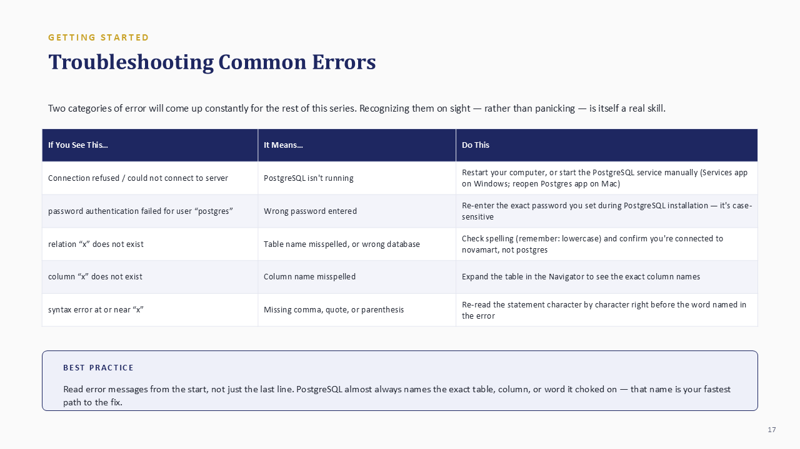
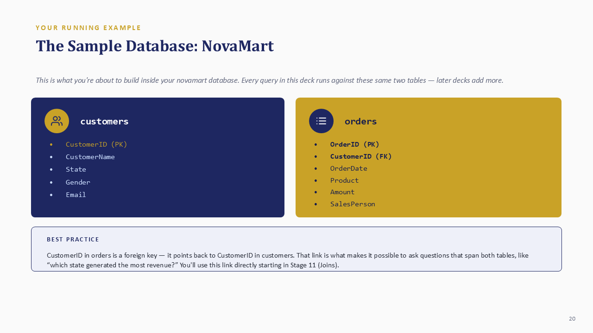
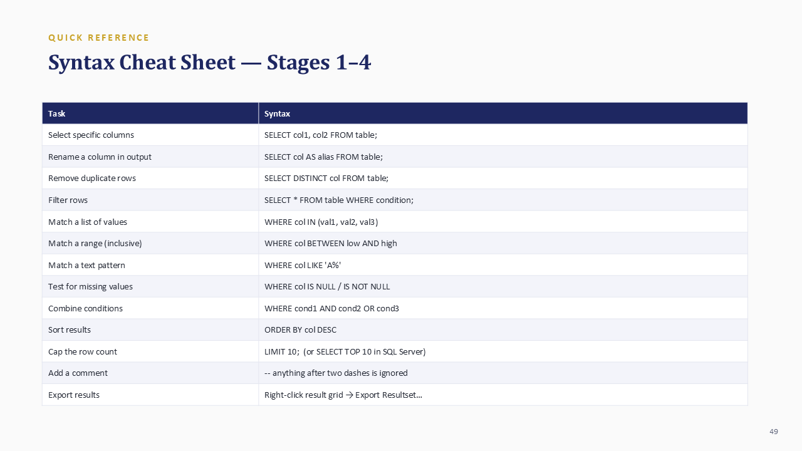

How to use this SQL guide
This guide is designed for a learner who has never queried a database. You do not need prior programming knowledge. Read Stage 1 before installing anything, complete the environment setup, and then type each query yourself. Reading SQL can make a command look familiar; running it, predicting the result, and correcting mistakes is what builds usable skill.
Every worked example uses the same NovaMart database so that concepts connect instead of appearing as isolated syntax. Five labels will help you navigate the learning process:
A clear explanation an instructor can use to introduce a concept, or a solo learner can read before attempting the next example.
A professional habit worth applying every time, such as naming columns explicitly or reading an error from the beginning.
A complete query tied to a defined table, followed by an explanation of what the database returns.
A short task to complete before continuing. Predict the result first whenever possible.
A common mistake, why it happens, and the reliable way to correct it.
Stage 1: Database foundations
What is a database?
A database is an organized collection of data stored so it can be searched, filtered, validated, and connected efficiently. A spreadsheet is excellent for small tables, calculations, and direct visual editing. A database becomes more useful when data grows, many people or systems rely on it, or one business process spans several related tables.
| Need | Spreadsheet | Relational database |
|---|---|---|
| Small list edited manually | Very convenient | Possible, but usually unnecessary |
| Connected customers and orders | Often requires repeated data or lookups | Uses keys and relationships |
| Strict data validation | Can be configured, but easily bypassed | Built into the table structure |
| Repeatable analysis | Formulas, filters, and pivots | Saved and reusable SQL queries |
| Large shared operational data | Can become slow or fragile | Designed for controlled access and scale |
Relational databases and DBMS software
A relational database separates information into related tables. Instead of repeating a customer's name, state, email, and phone number on every order, one customers table stores the customer record and an orders table refers to that customer through an ID. The software that stores and manages these tables is called a database management system, or DBMS.
| DBMS | Useful context |
|---|---|
| PostgreSQL | Free, standards-oriented, feature-rich, and widely used for analysis and applications. |
| MySQL | Free and common in websites and web applications. |
| Microsoft SQL Server | Common in Microsoft-centered enterprise environments. |
| SQLite | Lightweight and file-based, useful for learning and embedded applications. |
This guide standardizes on PostgreSQL. Most core statements transfer directly to other systems, although commands such as limiting rows can vary.
Tables, rows, columns, and data types
A table is one organized set of related data. A row, also called a record, is one complete entry. A column, also called a field, is one defined attribute stored for every row. Columns have data types, such as integer, text, date, decimal, or boolean. Data types help the database reject invalid input and handle sorting or calculations correctly.
NULL means no value is recorded. It is different from numeric zero and different from an empty text string. A NULL order amount is unknown; an amount of 0 is known and confirmed to be zero.
Primary keys, foreign keys, and relationships
A primary key uniquely identifies each row in its own table and cannot be NULL. A foreign key points to a primary key in another table and creates a relationship. A unique key also prevents duplicate values, but it does not necessarily serve as the table's main row identifier.
- One-to-one: one row in Table A matches one row in Table B.
- One-to-many: one customer can have many orders. This is the most common business relationship.
- Many-to-many: many students can take many courses, usually connected by an enrolment table.
A foreign-key value should match a real primary key in the related table or be NULL when the relationship is optional. This prevents an order from pointing to a customer who does not exist.
What SQL is and how a query is structured
SQL stands for Structured Query Language. It is the language used to retrieve, filter, summarize, combine, and change relational data. Keywords have a defined order. Not every query uses every clause, but clauses that are present must appear in the right sequence.
SELECT column_name -- what to retrieve
FROM table_name -- which table
WHERE condition -- which rows, optional
ORDER BY column_name; -- how to sort, optionalSQL keywords are conventionally written in uppercase and table or column names in lowercase. PostgreSQL does not require that style, but consistency makes long queries easier to scan. Two dashes begin a line comment, and a semicolon marks the end of a statement.
Set up PostgreSQL and DBeaver
PostgreSQL is the database server that stores the data. DBeaver Community is the visible application used to connect to that server, browse tables, write queries, and inspect results. Install PostgreSQL first because DBeaver needs a database server to connect to.
Install PostgreSQL
- Visit postgresql.org/download and choose your operating system.
- Run the standard installer and keep the core components selected.
- Create a strong password for the
postgressuperuser and store it securely. - Keep the default port
5432unless another local service already uses it. - Complete the installation. Stack Builder is optional and is not required for this guide.
This is a local database administrator credential, not an ordinary website password. You will need it when connecting DBeaver. Do not publish, share, or reuse it on unrelated services.
Install and connect DBeaver
- Download DBeaver Community for Windows, macOS, or Linux.
- Open DBeaver and create a new database connection.
- Select PostgreSQL. Use host
localhost, port5432, usernamepostgres, and your PostgreSQL password. - Choose Test Connection. Allow DBeaver to download the PostgreSQL driver if requested.
- Finish the connection when the test reports success.
The Database Navigator displays connections, databases, schemas, and tables. The SQL Editor is where you write statements. A table's Data tab lets you inspect rows. In the editor, Ctrl+Enter on Windows or Cmd+Return on macOS runs the current statement.

| Message or symptom | Likely cause | What to check |
|---|---|---|
| Connection refused | PostgreSQL is not running | Start or restart the PostgreSQL service, then reconnect. |
| Password authentication failed | Incorrect password | Re-enter the exact password; it is case-sensitive. |
| relation does not exist | Wrong database, schema, or table spelling | Confirm the editor is connected to novamart and inspect the Navigator. |
| column does not exist | Column name is misspelled | Expand the table and copy the actual column name. |
| syntax error at or near | Missing comma, quote, parenthesis, or keyword | Inspect the characters immediately before the word identified. |
Build the NovaMart practice database
Create a database named novamart, open a fresh editor connected specifically to it, and then create two related tables. PostgreSQL does not use MySQL's USE database command; the editor's active connection determines where the statement runs.

CREATE DATABASE novamart;After creating the database, refresh the Navigator, right-click novamart, and open a new SQL Editor. Then create and populate the tables:
CREATE TABLE customers (
customerid INTEGER PRIMARY KEY,
customername TEXT,
state TEXT,
gender TEXT,
email TEXT
);
CREATE TABLE orders (
orderid INTEGER PRIMARY KEY,
customerid INTEGER REFERENCES customers(customerid),
orderdate DATE,
product TEXT,
amount NUMERIC(10,2),
salesperson TEXT
);INSERT INTO customers VALUES
(1, 'Adaeze Obi', 'Rivers', 'Female', 'adaeze.obi@mail.com'),
(2, 'Tunde Bakare', 'Lagos', 'Male', 'tunde.bakare@mail.com'),
(3, 'Chinyere Eze', 'Abuja', 'Female', 'chinyere.eze@mail.com'),
(4, 'Ibrahim Musa', 'Kano', 'Male', 'ibrahim.musa@mail.com'),
(5, 'Ngozi Umeh', 'Rivers', 'Female', 'ngozi.umeh@mail.com');
INSERT INTO orders VALUES
(101, 1, '2025-01-12', 'Laptop', 450000.00, 'Amaka'),
(102, 2, '2025-01-18', 'Monitor', 125000.00, 'Bello'),
(103, 1, '2025-02-03', 'Keyboard', 35000.00, 'Amaka'),
(104, 3, '2025-02-16', 'Printer', 185000.00, 'Chidi'),
(105, 5, '2025-03-08', 'Router', 68000.00, 'Bello');Expand novamart → Schemas → public → Tables and inspect each table's Data tab. If both tables display their rows, the practice environment is ready.
Create a library database with authors and books tables. Choose suitable data types, primary keys, and a foreign key from books to authors. Explain whether the relationship is one-to-one, one-to-many, or many-to-many.
Stage 2: Retrieve and filter data
SELECT specific columns
SELECT names the columns the database should return. An asterisk asks for every column, while an explicit list returns only what the analysis needs.
SELECT *
FROM customers;
SELECT customername, state
FROM customers;An explicit column list documents the intended output, transfers less unnecessary data, and prevents a report from changing unexpectedly when a table gains another column.
Rename output with aliases
An alias changes a result heading without renaming the stored column. Use quotes when an output label contains spaces.
SELECT customername AS "Customer Name",
state AS "Location"
FROM customers;Remove duplicate results with DISTINCT
SELECT DISTINCT state
FROM customers;NovaMart has five customer rows but only four distinct states. With several selected columns, DISTINCT evaluates the complete combination. Two rows collapse only when every selected value matches.
Filter rows with WHERE
SELECT orderid, product, amount
FROM orders
WHERE amount > 100000;| orderid | product | amount |
|---|---|---|
| 101 | Laptop | 450000.00 |
| 102 | Monitor | 125000.00 |
| 104 | Printer | 185000.00 |
Text and date literals need single quotes. Numeric values do not. Comparison operators include =, <> or !=, >, <, >=, and <=.
Combine conditions with AND, OR, and NOT
SELECT *
FROM orders
WHERE salesperson = 'Bello'
AND amount > 50000;AND requires every condition to be true. OR accepts a row when at least one condition is true. NOT reverses a condition. Use parentheses when combining AND and OR so the intended logic is unambiguous.
Add publication years and five book records. Return every column; return only title and genre with a readable title alias; and return the list of distinct genres. Predict whether adding authorid to the DISTINCT query will increase the number of rows.
Stage 3: Filter data properly
Match a list with IN
SELECT customername, state
FROM customers
WHERE state IN ('Rivers', 'Lagos', 'Abuja');IN is clearer than repeating the same column through several OR conditions. Text values need quotes; numeric values do not.
Match an inclusive range with BETWEEN
SELECT orderid, product, amount
FROM orders
WHERE amount BETWEEN 50000 AND 150000;BETWEEN includes both boundaries. The same operator works with suitable date columns:
SELECT *
FROM orders
WHERE orderdate BETWEEN '2025-01-01' AND '2025-03-31';Search text patterns with LIKE
| Pattern | Meaning |
|---|---|
'A%' | Starts with A |
'%son' | Ends with son |
'%market%' | Contains market |
'A_a' | A, one character, then a |
SELECT customername
FROM customers
WHERE customername LIKE 'A%';PostgreSQL's LIKE is case-sensitive. Use ILIKE when you intentionally need PostgreSQL's case-insensitive matching. Other database systems handle case sensitivity differently.
Test missing values correctly
SELECT *
FROM customers
WHERE email IS NULL;
SELECT *
FROM customers
WHERE email IS NOT NULL;WHERE email = NULL does not identify missing values. It evaluates to unknown and returns no matching rows. Also check whether the source system stores a true NULL or an empty string, because IS NULL does not match ''.
Combine several filters safely
SELECT *
FROM orders
WHERE salesperson IN ('Amaka', 'Bello')
AND amount > 50000
AND orderdate BETWEEN '2025-01-01' AND '2025-03-31';Parentheses matter when OR is added. In the following query, the state alternatives are evaluated together before the amount condition:
SELECT *
FROM customers
WHERE (state = 'Rivers' OR state = 'Lagos')
AND customerid > 1;Write queries for Deluxe or Suite rooms using IN; total cost between 50000 and 200000; guest names beginning with K; and bookings with no special request. Inspect the column first to determine whether missing requests are NULL or empty text.
Stage 4: Sort and limit results
Sort results with ORDER BY
SELECT product, amount
FROM orders
ORDER BY amount DESC;Ascending order is the default. Add DESC for descending order. Multiple sort columns provide a predictable tiebreaker:
SELECT salesperson, product, amount
FROM orders
ORDER BY salesperson ASC, amount DESC;Limit the number of rows
SELECT product, amount
FROM orders
ORDER BY amount DESC
LIMIT 3;PostgreSQL, MySQL, and SQLite use LIMIT. SQL Server commonly uses TOP after SELECT. Pair the row cap with ORDER BY whenever the question asks for the highest, lowest, newest, oldest, best, or worst records.
Without an explicit sort, a database does not promise which rows will appear first. LIMIT 10 alone means ten available rows, not the top ten.
Return the top three scores; resolve tied scores by sorting player name ascending as a second column; and return the single lowest score using ORDER BY and LIMIT rather than an aggregate function.
Worked assignment answers
Attempt each task before opening its solution. The struggle to recall and assemble a query is part of learning; recognizing an answer after it is revealed is not the same as producing it independently.
Stage 1 answer: library keys and relationship
bookid is the primary key of books and authorid is the primary key of authors. The authorid column in books is a foreign key referencing authors. This simple design is one-to-many: one author may have many books, while each book row points to one author.
Stage 2 answer: library queries
SELECT * FROM books;
SELECT title AS "Book Name", genre
FROM books;
SELECT DISTINCT genre
FROM books;SELECT DISTINCT genre, authorid can return more rows because uniqueness is evaluated across each genre-author combination.
Stage 3 answer: hotel filters
SELECT * FROM bookings
WHERE roomtype IN ('Deluxe', 'Suite');
SELECT * FROM bookings
WHERE totalcost BETWEEN 50000 AND 200000;
SELECT * FROM bookings
WHERE guestname LIKE 'K%';
SELECT * FROM bookings
WHERE specialrequest IS NULL;
-- Use specialrequest = '' only when the source stores empty text.Stage 4 answer: leaderboard sorting
SELECT * FROM leaderboard
ORDER BY score DESC
LIMIT 3;
SELECT * FROM leaderboard
ORDER BY score DESC, playername ASC;
SELECT * FROM leaderboard
ORDER BY score ASC
LIMIT 1;The player-name tiebreaker makes the order predictable when two scores are equal.
SQL syntax cheat sheet
| Task | Syntax |
|---|---|
| Select columns | SELECT col1, col2 FROM table; |
| Rename output | SELECT col AS alias FROM table; |
| Remove duplicates | SELECT DISTINCT col FROM table; |
| Filter rows | SELECT * FROM table WHERE condition; |
| Match a list | WHERE col IN (value1, value2) |
| Match a range | WHERE col BETWEEN low AND high |
| Match text | WHERE col LIKE 'A%' |
| Find missing values | WHERE col IS NULL |
| Sort results | ORDER BY col DESC |
| Cap rows | LIMIT 10 |
| Add a comment | -- comment text |

Frequently asked questions
What is the difference between a spreadsheet and a database?
A spreadsheet is convenient for smaller flat tables, direct editing, formulas, and presentation. A relational database is designed for connected tables, controlled data types, validation, repeatable queries, and larger shared data. Analysts commonly use both.
Why does WHERE column = NULL return nothing?
NULL is the absence of a recorded value, not an ordinary value. Comparisons with NULL evaluate as unknown. Use IS NULL or IS NOT NULL.
Do I need PostgreSQL to learn SQL?
No. The core concepts transfer to MySQL, SQL Server, SQLite, and other relational systems. PostgreSQL provides a capable free environment and gives every example in this guide one consistent syntax.
Is SQL case-sensitive?
SQL keywords are generally not case-sensitive, but text comparisons and object-name behavior vary by database. PostgreSQL folds unquoted identifiers to lowercase, and its LIKE operator is case-sensitive.
What should I learn next?
Continue with calculations, aggregate functions such as COUNT and SUM, GROUP BY, HAVING, data-cleaning functions, joins, subqueries, and complete analysis projects.
Continue your data-analysis pathway
This guide covers the first four stages of the JENECONK SQL learning series. Continue building your wider analyst toolkit through data cleaning in Excel, Power BI for business reporting, and the data analyst career roadmap. For guided practice, projects, and facilitator support, explore the JENECONK AI Training Academy.
JENECONK's training team developed this resource as a practical foundation for learners who need to move from spreadsheet familiarity into structured data work. Examples are written for hands-on use, and the guide will be expanded as later stages in the SQL series are published.